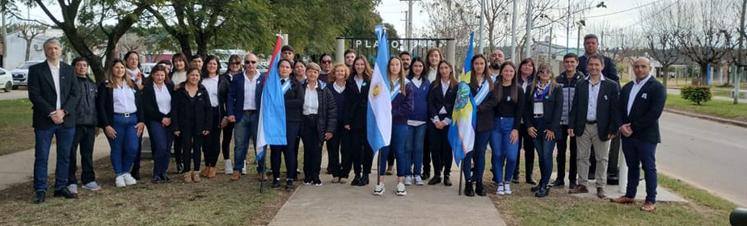

¿Quienes somos?
El Centro de Formación Profesional N° 61 dependiente de la Dirección de Educación Técnico Profesional del Consejo General de Educación funciona en la Localidad de La Criolla desde el año 2014 y actualmente cuenta con un anexo en la ciudad vecina de Colonia Ayuí. Somos una institución educativa que brinda trayectos de formación profesional y capacitación laboral para una rápida inserción en el mercado socioproductivo local y regional. La Formación Profesional permite compatibilizar la promoción social, profesional y personal con la productividad de la economía nacional, regional y local.